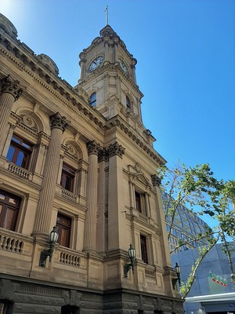
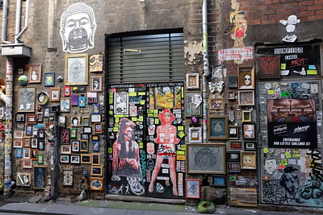

MUSIC WALK KEY SIGHTS:
1. Town Hall

2. State Library Victoria

3. Princess Theatre

4. Her Majesty's Theatre

A WALK IN THE PARK KEY SIGHTS:
1. St. Patrick's Cathedral
.jpg)
2. Fitzroy Gardens

3. Treasury Gardens

4. ACMI

ARCADES & LANES KEY SIGHTS:
1. Flinders Street Station

2. Presgrave Place

3. The Block Arcade

4. Royal Arcade

ELEGANT ENCLAVE KEY SIGHTS:
1. Forum Theatre
,_Forum_Melbourne_--_2019_--_1585.jpg)
2. St. Paul's Cathedral

3. National Gallery Australia (NGV)

4. Federation Square

WATERFRONT KEY SIGHTS:
1. Melbourne Aquarium

2. Melbourne Exhibition Centre

3. Immigration Museum

4. Webb Bridge
.jpg)
SECRET GARDENS KEY SIGHTS:
1. Queen Victoria Gardens

2. Royal Botanic Gardens
.jpg)
3. Shrine of remembrance
4. Sydney Myer Music Bowl

SPORTS & ENTERTAINMENT KEY SIGHTS:
1. Rod Laver Arena

2. Artplay

3. Westpac Centre

4. Hamer Hall

COSMOPOLITAN KEY SIGHTS:
1. Melbourne Comedy Theatre

2. Regent Theatre

3. Museum of Australian Chinese History

4. Melbourne Town Hall